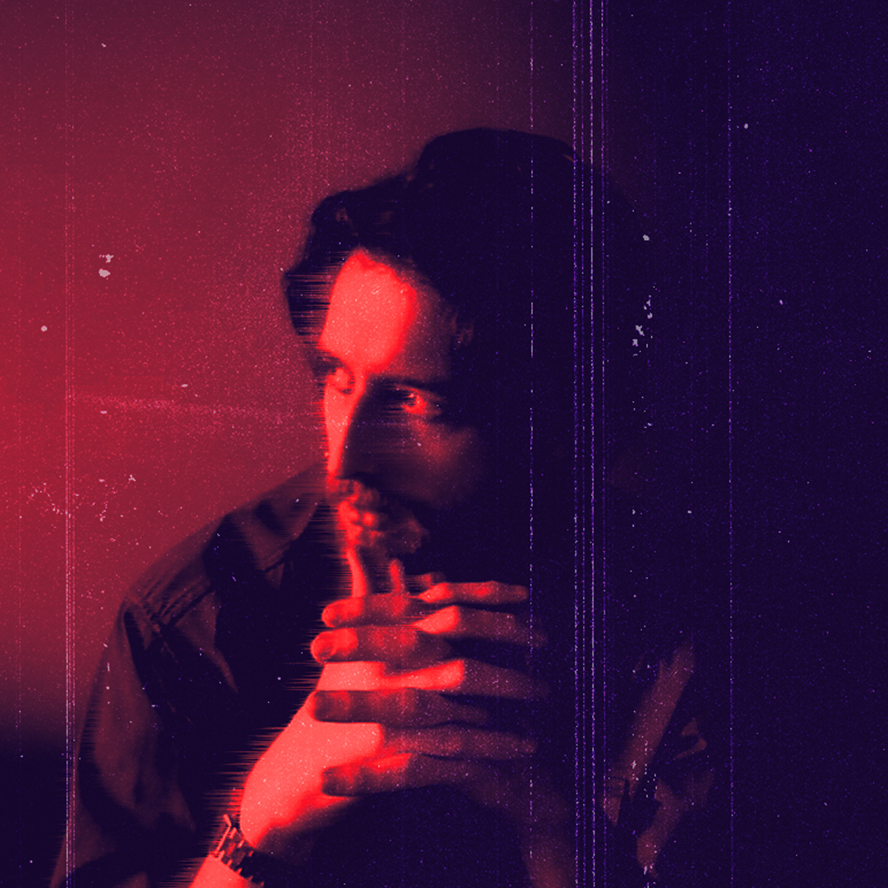

I'm not a character from David Lynch's Twin Peaks, but here is what you should know about me
I was born in a small town, in southern Brazil. There I was introduced to art by my mother, an art teacher at my school.
Fun fact: I did not want to be a Graphic Designer when I was a kid. In fact, I dreamed of becoming a Formula 1 driver... and as you might have thought, it did not work out
Initially, my academic career began in IT, studying Information Systems. Although I still really liked to study tech-related subjects, I switched majors to Communications, where I graduated. With all my years of experience in Graphic Design, I still really liked technology, so I enrolled in a postgraduate course in UX Design. I am a person who is interested in several areas and I like to delve deeper into each of them. In my work, I am meticulous and I like to achieve excellence in what I set out to do. Due to my dedication, I have been awarded 4 times for my work.
Also, I am always trying to improve and learn new things. Apart from my postgraduate degree, I also learned coding for fun. This entire website was done by me with only a couple months of studying.
Another fun fact: the entire color palette from this website is based on the flag of my home state, Rio Grande do Sul.
Get in touch with me and let's have a chat!